The living knowledge graph for go-to-market. Every company, person, job and signal — resolved, bitemporal, provenance-backed. Salesforce is the system of record. Clay is the system of action. This is the system of truth.
Deterministic entity resolution over CRM imports: blocking, word-boundary seniority banding, constrained clustering. Two rapid imports of the same person produce one contiguous version chain — the bitemporal clock is read once per transition, so the chain never gaps or reverses.
Careers boards, SEC filings, funding press and licensed feeds flow in as provenance-backed claims. The job-change detector diffs consecutive position versions — a move and a retitle landing between two runs both surface, and nothing double-reports.
Typed events with idempotency keys, bounded-retry delivery (attempts counter, retirement instead of queue stalls), per-tenant webhook destinations, mrkdwn-safe rendering. A tenant's backlog is recorded, never flooded.
CRM import (CSV / Salesforce / HubSpot)
└─ resolve ─── deterministic ER: blocking → pairwise rules → constrained clustering
│ identity is NEVER decided by an LLM
├─ observe ─ careers boards · SEC Form D · funding press · licensed feeds
│ LLMs EXTRACT claims; identity decisions stay deterministic
├─ detect ── consecutive-version snapshot diffing → typed events
│ job_change · promotion — idempotent, bounded-retry delivery
└─ act ───── per-tenant webhooks · Slack · Graph Audit reports
Every claim carries provenance: source, URL, retrieval time, extractor version, confidence. Every event is traceable to the positions that back it.
clock_timestamp(), so it stays contiguous
under rapid imports.$ git clone https://github.com/adventurewave-labs/substrate && cd substrate $ python3 -m venv .venv && .venv/bin/pip install -e ".[dev]" $ .venv/bin/substrate import-csv --tenant demo --contacts-file crm-export.csv --report report.json $ .venv/bin/substrate detect --tenant demo --report detect.json # job-change signals $ .venv/bin/substrate audit --tenant demo --out audit.json # graph audit
CSV import works with zero infrastructure; add any PostgreSQL for persistence (schema: 8 numbered migrations).
The full product and engineering record is in this repository: